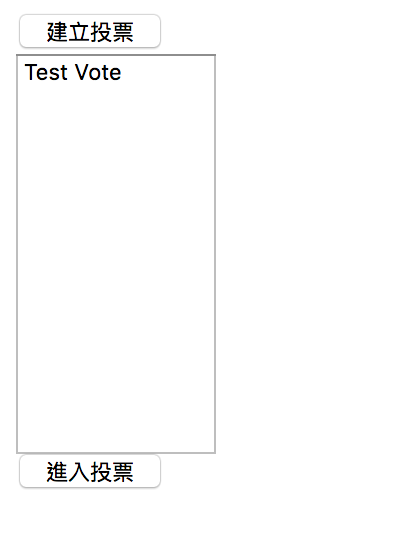

[鐵人賽Day19] 實作一個即時投票系統 (4) - 建立投票列表
文章目錄
今天我們要來做投票列表，概念跟Day11的上線名單一模一樣，忘記的可以去回顧一下，那麼我們就開始吧！
建立列表HTML元素
我們先把voteMenu區塊設成顯示，改成voteFrom區塊隱藏
<div id="voteRoom" style="display:none">
</div>
<!-- 所有投票選單 -->
<div id="voteMenu">
</div>
<!-- 新增投票區 -->
<div id="voteForm" style="display:none">
</div>
建立一個select 元素當作列表，記得加入multiple讓它展開，寬和高有訂一下，再來是2顆Button，一顆進入建立投票的頁面，一顆進入選擇的投票房間頁面。
<button id="creatVote" type="button">建立投票</button>
<br>
<select id="selVote" multiple style="height:200px;width:100px">
</select>
<br>
<button id="goVote" type="button">進入投票</button>
建立頁面切換事件
var creatVote = document.getElementById('creatVote');
var goVote = document.getElementById('goVote');
建立後端取得投票資料方法
先到Hub建立取得方法，注意這邊取得時只要回傳給要求的用戶就好，不要全部都傳，不然會造成一個新的使用著上線想取得所有投票方法，每個人都全部丟一次資料，但是資料並無更新，所以這邊沒有這種必要。
public async Task GetVoteList()
{
await Clients.Caller.SendAsync("ReceiveVoteList", _voteService.GetVoteList());
}
當連線成功時取得資料
連線時取得資料，當然要寫在連接成功後的事件，也就是connection.start().then()裡面，其實day17已經寫過了，但是那天寫的是只取得該筆投票，這次是全部投票所以要改用上面新寫的方法，之前的GetVote記得移除。
connection.start()
.then(function () {
connection.invoke("GetVoteList").catch(function (err) {
return console.error(err.toString());
});
})
.catch(function (err) {
return console.error(err.toString());
});
取得成功後先清空頭票選單，再binding到我們建立的select元素中，完成後返回投票選單，返回投票選單這邊是因為跟建立投票一樣的事件，如果你在建立投票表單的話則會切換回頭票選單。
connection.on("ReceiveVoteList", function (json) {
selVote.innerHTML = '';
for (var i = 0; i < json.length; i++) {
var sel = document.createElement('option');
sel.innerHTML = json[i].voteName;
sel.value = json[i].voteName;
selVote.appendChild(sel);
}
// 如果在建立投票頁面，則切換回投票選單
if (voteMenu.style.display === 'none'){
voteForm.style.display = 'none';
voteMenu.style.display = '';
}
});
成功後結果，你會再選單內看到之前建立的測試投票

今天就大概這樣，下一篇就是最後的頁面了。